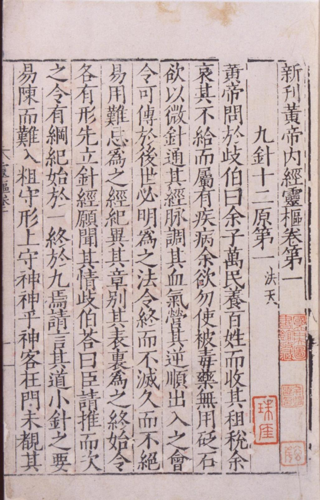
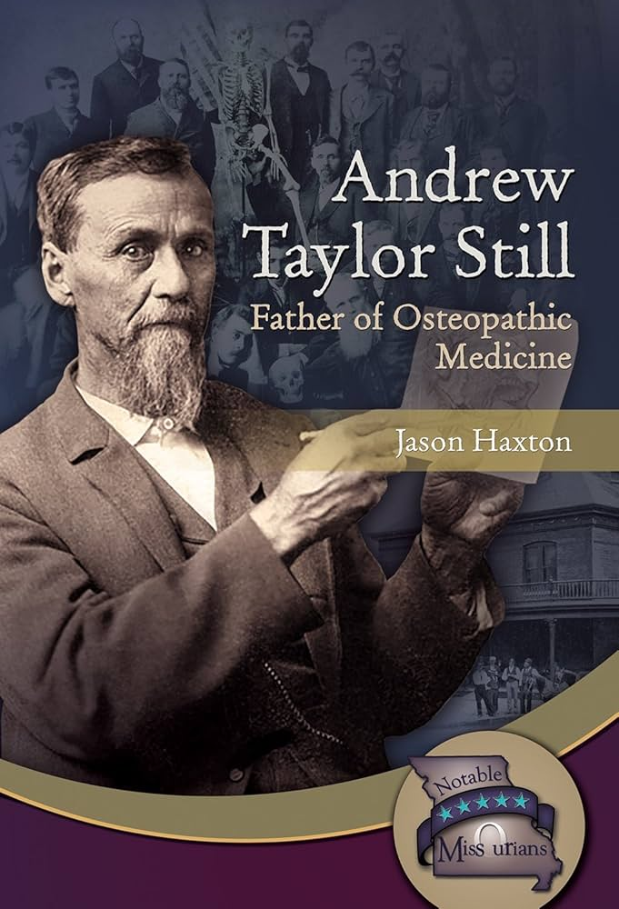

跨越時空的醫學共鳴：西方骨病學與中醫經典的殊途同歸
【跨越時空的醫學共鳴：西方骨病學與中醫經典的殊途同歸 】
近幾年的進修課程，其實多數都屬於西方骨病學（Osteopathy）的醫學技術。骨病學最早可追溯至西元 1874 年，由骨病學之父 Andrew Taylor Still 所創立。A.T. Still 極度強調「骨骼排列、體液循環與自癒力」這三大重點。
今天在課堂上，聽著蕭老師深入解析這門百年前的醫學哲學時，心裡產生一股強烈的熟悉感。這位 19 世紀的西方醫學先驅對人體的觀察，竟然與兩千年前古典中醫所描述的核心觀念，有著驚人的高度重疊！這再次給了我一劑強心針，確信東方與西方看見的人體，其實是同一片風景。
簡單列出幾個西方骨病學與傳統中醫「英雄所見略同」的有趣觀念：
1. 人是一個整體，不能把零件拆開來看
西方骨病學： 強調「人體是一個統一的整體（The body is a unit.）」。身心靈和各個系統是互相連動的，不能頭痛就只醫頭、腳痛只看腳。
傳統中醫： 這就是中醫最經典的「全人觀念」。中醫認為五臟六腑與經絡是連在一起的，有時候腿部的痠痛，問題可能出在腰腹；體表的緊繃，可能與內臟的失衡有高度相關。
2. 管路通了，身體就不會痛
西方骨病學： 有句名言叫「動脈的法則至高無上（The rule of the artery is supreme.）」。意思是只要血液、淋巴、神經的流動沒有被卡住，營養進得去、廢物出得來，身體就會保持健康。
傳統中醫： 中醫常說「通則不痛，痛則不通」，治病常常圍繞著「調氣和血」。不管是針灸還是吃藥，目的都是要確保體內的氣血水液流動順暢，不塞車。
3. 結構與功能會互相影響
西方骨病學： 認為「結構與功能是交互影響的（Structure and function are reciprocally interrelated.）」。骨盆或脊椎歪了，可能會壓迫到神經或影響內臟功能；反過來，如果腸胃長期發炎，也會拉扯周邊的筋膜，讓你覺得腰痠背痛。
傳統中醫： 中醫很重視「內外互參」。臟腑的虛寒（功能）會引發體表的緊繃（結構），而外在的風寒濕邪入侵肌肉骨骼，久了也會往內影響臟腑。兩邊的邏輯完全相通！
4. 喚醒「自癒力」才是治本的關鍵
西方骨病學： A.T. Still 認為，人體具備自我調節、自我修復與維持健康的能力（The body is capable of self-regulation, self-healing, and health maintenance.）。醫師的手法不是在「治好」你，而是在幫你「移除身體卡住的障礙」，讓身體自己治好自己。
傳統中醫： 《黃帝內經》裡說「正氣存內，邪不可干」。中醫的治療，最終目的都是幫你把失衡的狀態調回來，把身體原有的「正氣（自癒力）」養足，讓身體重新拿回主導權。
👨⚕️ 課後心得
再次佩服與讚嘆《黃帝內經》裡古人的智慧，這些流傳千年的中醫底蘊，形成了我們特有的中醫醫學，而上世紀發跡的西方骨病學家在不同的醫學文化裡，也在核心理念上與中醫古人的智慧完美交會，見證了同一片人體風景，甚至後來演化出的各個骨病學派分支。
這幾年的跨界進修，就像是拿著西方的解剖力學地圖，重新印證了一次中醫的經絡與氣血理論。站在這些可依循的解剖、肌動學與生物力學的基礎基石下，再次看到了熟悉的中醫影子，真的是倍感親切。
這讓我再次相信，面對複雜的疼痛或難解的身體不適，如果能結合西方的精準解剖與力學評估，再融入中醫的全人觀點與氣血思維，就能用更客觀、更全面的方式來解開身體的謎團。這也是我持續在臨床上實踐「中西醫結合、內外互參」的最大動力！
#骨病學 #Osteopathy #AndrewTaylorStill #黃帝內經 #全人診療 #內外互參
📚 實證與學術參考文獻 (References)：
American Osteopathic Association. (2018). Foundations of Osteopathic Medicine (4th ed.). Wolters Kluwer.
de Morais, E. G., et al. (2021). Understanding Traditional Chinese Medicine Therapeutics: An Overview of the Basics and Clinical Applications. Healthcare, 9(3), 257.
Brosnan, C. (2017). Epistemic cultures in complementary medicine: knowledge-making in university departments of osteopathy and Chinese medicine. Health Sociology Review, 26(2), 164-178.

